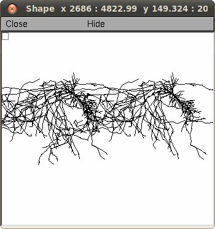
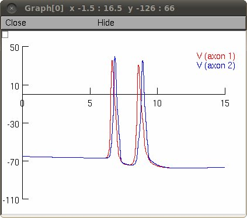
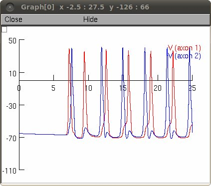

Model of pyramidal CA1 cells connected by gap junctions in their axons. Cell geometry is based on anatomical reconstruction of rat CA1 cell (NeuroMorpho.Org ID: NMO_00927) with long axonal arbor. Model init_2cells.hoc shows failures of second spike propagation in a spike doublet, depending on conductance of an axonal gap junction. Model init_ring.hoc shows that spike failure result in reentrant oscillations of a spike in a loop of axons connected by gap junctions, where one gap junction is weak. See N. Vladimirov, Y. Tu, R.D. Traub. Shortest loops are pacemakers in random networks of electrically coupled axons. Front. Comput. Neurosci. 6:17. doi: 10.3389/fncom.2012.00017. Usage 1. Unzip Vladimirov2012.zip into an empty directory 2. Compile the mod files with nrnivmodl or mknrndll 3. Double click on init_2cells.hoc, or execute nrngui init_2cells.hoc from the command line 4. Panels will appear with RunControl buttons, graph of voltage in axons, and cell shapes including a graph of the axon morphology:  5. Click "Init & Run" button to start the simulation. After a short time you should see a graph of the APs:  6) Do steps 3-5 with double click on init_ring.hoc, or execute nrngui init_ring.hoc to simulate how failure of second spike in a doublet results in reentrant spike in the loop.  Implemented by Nikita Vladimirov [nikita.vladimirov at gmail.com]